S²-HWM: a Sparse Event-Structured Hierarchical World Model for Long-Horizon Surgical Manipulation
A world model that learns where the events in a surgical task are, and plans over them instead of over every primitive step.
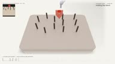
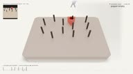
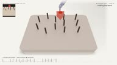
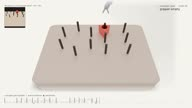
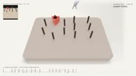
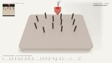
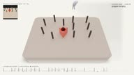
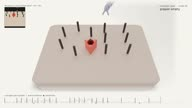
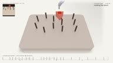
One continuous minute of the S²-HWM policy on SurRoL PegTransfer. After each placement the block rests on the peg for a moment, is returned to a random source peg, and the policy carries on with no reset of the environment or of its own recurrent state. Top left: the 64×64 visual observation, which is everything the policy ever sees of the scene. Top right: the latent goal the manager is currently committed to, and whether the gripper is holding the block. Bottom: manager goal updates as ticks, event evidence as the faint trace, placements as dots. Rendered in Blender from the recorded simulation poses. Click the filmstrip to scrub.
#Abstract
Long-horizon surgical robot manipulation is challenging because task rewards are sparse, while meaningful interaction changes occur at irregular intervals. Existing world-model agents typically imagine at primitive-step resolution, leaving variable-duration task progress implicit. Manually specified stages can provide intermediate structure, but their task-specific boundaries are difficult to align with state-dependent interaction transitions.
We propose S²-HWM, a Sparse Event-Structured Hierarchical World Model that learns sparse event evidence from primitive latent trajectories to coordinate an event-level manager and a primitive-step worker. The event evidence schedules manager goal updates, and each selected latent goal conditions the worker's primitive actions until the next update. The learned event evidence also forms variable-duration segments for an Event Transition Model (ETM), which predicts the next-boundary stochastic state, segment duration, and accumulated segment reward. Chaining these event-level predictions provides a variable-duration continuation beyond the primitive imagination horizon for manager learning, while the worker retains primitive-step actor–critic learning.
On a SurRoL-based PegTransfer task, S²-HWM achieves a success rate of 98.7 ± 2.3%, outperforming the flat GASDreamerV3 baseline by 22.7 percentage points.
#Method
S²-HWM starts from a Dreamer-style recurrent state-space model and adds two things to the latent state: a slow stage context that changes rarely, and a sparse gate that decides when it is allowed to change. Most primitive steps keep the same context. When the latent dynamics show a meaningful shift, the gate fires, the context updates, and that step becomes an event boundary.
No semantic stage labels are involved. The boundaries are induced from the latent trajectories during training, and they turn a uniform stream of steps into a sequence of variable-duration segments.
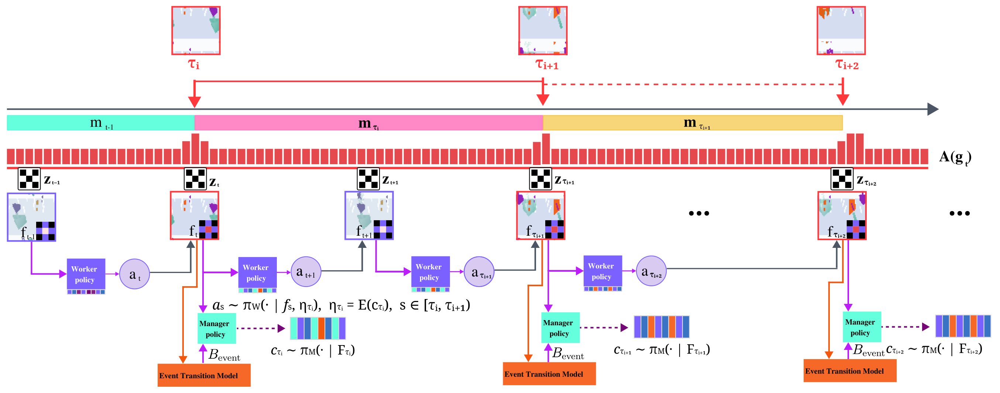
The policy is split along the same boundaries. A manager acts only at accepted event boundaries: it looks at the current latent state and picks a discrete latent goal. A worker acts at every primitive step, conditioned on that goal, until the manager updates it. The manager therefore makes a handful of decisions per episode instead of hundreds, and each decision is placed where the task actually changed.
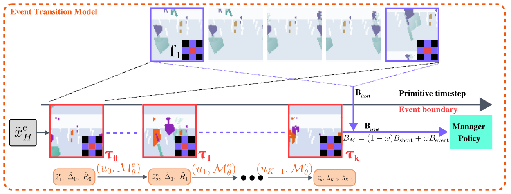
The event segments also give us training data for a second, coarser dynamics model. The Event Transition Model takes the latent state at one boundary and predicts three things about the next segment: the state at the next boundary, its duration, and its accumulated reward. It is not a one-step predictor; it is a model of stage-to-stage progress.
This is where the two scales are coupled. When we train the manager, its value target is bootstrapped not only from the short primitive-step imagination but also from a chain of event-level predictions. A distant sparse success can reach the manager through a few event transitions instead of hundreds of steps. Without this path, the event model would just be an auxiliary loss; with it, the event model changes what the high-level policy learns.
#Results on PegTransfer
We evaluate on a SurRoL-based PegTransfer task with five dependent phases and a sparse terminal reward, against model-free and world-model baselines, with three training seeds and 50 deterministic episodes each. Two extended-horizon settings stress the learned structure: repeated transfer asks for two sequential transfers in one episode, and repeated transfer with perturbation externally drops the block during the second one.
| Method | Single transfer | Repeated transfer | Repeated + perturbation |
|---|---|---|---|
| PPO | 0.0 | 0.0 | 0.0 |
| DreamerV2 | 0.0 | 0.0 | 0.0 |
| GASDreamerV3 | 76.0 ± 12.0 | 77.3 ± 18.6 | 65.3 ± 14.0 |
| S²-HWM | 98.7 ± 2.3 | 91.3 ± 6.1 | 88.0 ± 5.3 |
| w/o event-gated updates | 80.7 ± 28.3 | 64.7 ± 56.1 | 63.3 ± 55.1 |
| w/o Event Transition Model | 91.3 ± 5.0 | 74.7 ± 38.7 | 67.3 ± 30.0 |
| w/o hierarchical policy | 68.0 ± 20.3 | 52.0 ± 33.4 | 46.0 ± 30.0 |
Three things stand out. The flat world model is not hopeless: it reaches 76% on the nominal task. But every extension of the horizon costs it, and the induced drop costs it most. S²-HWM loses far less, which is the behaviour we wanted from event-level structure: after a drop, the manager simply re-enters an earlier stage. And each of the three components matters. Removing the hierarchical policy costs the most in every setting. Removing the event gate or the Event Transition Model costs less on the nominal task, but once the horizon is extended the drop is large and the variance across seeds balloons, which is what an unstable credit-assignment path looks like.
GraspAny, the short-horizon control. PegTransfer is the long-horizon task the method is built for. To check that the event mechanism and the manager–worker split do not cost anything on ordinary visual grasping, we also train on GraspAny, a short task with the same 64×64 input and nine-action interface but no extended sequence of events to track. Under the same protocol, three seeds and 50 deterministic episodes each, S²-HWM reaches 61.3 ± 5.8% success against 52.0 ± 14.4% for GASDreamerV3, while PPO and DreamerV2 do not learn the task at all. It is a deliberately limited claim: the hierarchy does not hurt primitive control, and it learns it more consistently across seeds. The clip near the top of this page is one continuous minute of this task.
#Citation
@article{zhang2026s2hwm,
title = {S$^2$-HWM: Sparse Event-Structured Hierarchical World Model
for Long-Horizon Surgical Robot Manipulation},
author = {Zhang, Shuzhe and Zhu, Xin and Qian, Yinling and Wang, Qiong},
journal = {arXiv preprint arXiv:2608.13103},
year = {2026}
}